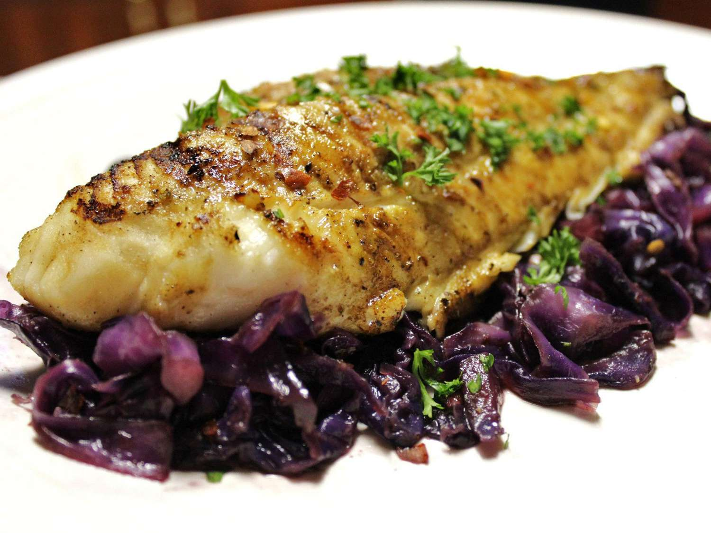

Grilled Fish Steaks

This grilled fish recipe is very simple but tasty as good as a brazillian barbecue (it is a joke).
Ingredients
- 6x tablespoons olive oil;
- 1x tablespoon fresh lemon juice;
- 1x tablespoon chopped fresh parsley;
- 1x clove garlic. minced;
- 1x tablespoon dried basil;
- 1x tablespoon salt;
- 1x tablespoon ground black pepper;
- 2 (6 ounce) fillets halibut;
How to cook
- Step: Combine olive oil, lemon juice, parsley, garlic, basil, salt, and pepper together in a stainless steel or glass bowl;
- Step: Place the halibut fillets in a shallow glass dish or a resealable plastic bag; pour the marinade over the fish. Cover or seal and place in the refrigerator for 1 hour, turning occasionally.
- Step: Preheat an outdoor grill for high heat and lightly oil the grate. Set grate 4 inches from the heat;
- Step: Remove halibut fillets from marinade and drain off any excess;
- Step: Cook on the preheated grill until fish flakes easily with a fork, about 5 minutes per side;
Return to main page
More recipes like this